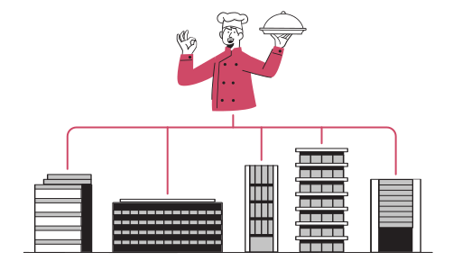

1. Plan once
Set your cycle menus, portion standards, and dietary rules in one place so every site starts from the same baseline.
For senior living and healthcare foodservice teams
Embrayse combines nutrition planning, production, inventory, and compliance into one practical workflow. Teams spend less time chasing paperwork and more time delivering safe, personalized meals.
How it works
Embrayse follows the way culinary teams already work. It just removes the manual handoffs and duplicate tools.
Set your cycle menus, portion standards, and dietary rules in one place so every site starts from the same baseline.
Convert menus into prep lists, production views, and inventory needs so kitchens can execute without guesswork.
Capture meal service and documentation in real time to support surveys, risk reduction, and leadership reporting.
10k+ employees supported by the eMeals payroll-deduction workflow
4 hours/week saved by teams replacing manual tracking with centralized records
$4 PMPM transparent employee meal pricing model
Core model
Most teams juggle spreadsheets, paper logs, and siloed systems. Embrayse gives dietitians, culinary teams, and leaders one shared source of truth so decisions stay aligned.
Protect therapeutic and dietary standards with meal-level visibility and safer substitutions.
Standardize production and inventory practices while preserving flexibility at each community.
Track true food cost and service performance with reporting leaders can trust.

Feature grid
Each module is useful alone and stronger together, so you can roll out in phases without losing momentum.
Capture preferences and dietary needs so each person receives the right meal at the right time.
Maintain clean logs and records for survey defense, policy adherence, and cross-site consistency.
Keep nutrition goals and food safety checks inside daily execution, not separate afterthoughts.
Give managers fast visibility into meal performance, waste trends, and labor impact.
Connect menu decisions to production and procurement to reduce over-ordering and margin leakage.
Offer affordable on-site meals through payroll deduction with policy controls and transparent pricing.
Final CTA
In one conversation, we can identify where manual effort is highest and show how Embrayse reduces friction without forcing a disruptive rebuild.
Request your demo